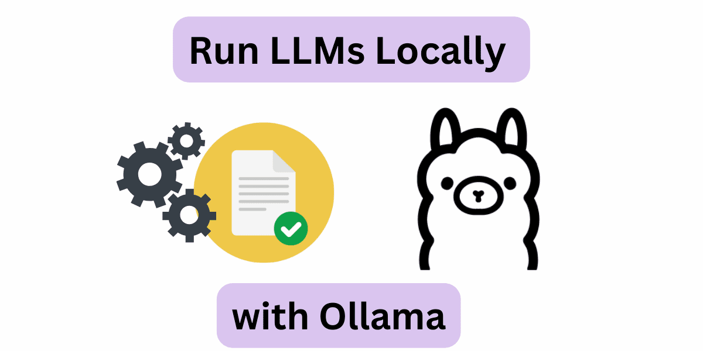
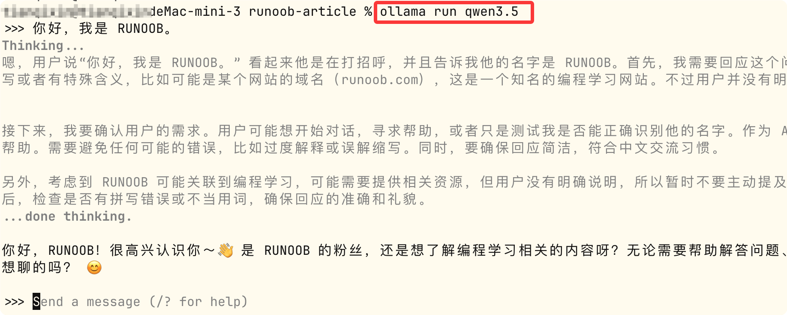

Ollama チュートリアル

Ollama は、ローカルマシン上で大規模言語モデル（LLM）を簡単にデプロイおよび実行できるように設計された、オープンソースのローカル大規模言語モデル実行フレームワークです。
Ollama は、macOS、Windows、Linux など複数のオペレーティングシステムをサポートしており、Docker コンテナでの実行にも対応しています。
簡単に言うと、ChatGPT、Claude、DeepSeek のようなサービスがインターネット経由で他社のモデルを呼び出すのに対し、Ollama はどちらかというとローカル AI モデル実行環境。
このチュートリアルは誰向けですか？
Ollama は、開発者、研究者、データプライバシーに高い要求を持つユーザーに適しています。ローカル環境で大規模言語モデルを迅速にデプロイおよび実行できるとともに、柔軟なカスタマイズオプションを提供します。
Ollama を使用すると、ローカルで Qwen3.5、Llama 3.3、DeepSeek-R1、Phi-4、Mistral、Gemma 2 などのモデルを実行できます。
| 対象者 | やりたいこと |
|---|---|
| AI 初心者 | ローカル大規模モデルとは何かを理解し、Ollama をインストールして、モデルのダウンロード、実行、削除を行う |
| プログラマー / 開発者 | 大規模モデルを自分の Python、JavaScript、Web アプリケーションに統合する |
| AI Agent 開発者 | ローカルモデルを Claude Code、Codex、OpenCode などのプログラミング Agent に接続する |
| ローカル AI を体験したい一般ユーザー | API を購入せず、データをクラウドにアップロードせずに、自分のパソコンでさまざまなオープンソースモデルを体験する |
開発者は Ollama で何ができるのか
開発者にとって、Ollama の価値は、大規模モデルをいつでも呼び出せるローカルサービスに変えることです。
代表的な用途には、AI チャットボット、AI ライティングツール、AI プログラミングアシスタント、文書分析ツール、RAG ナレッジベース、ベクトル検索、AI Agent、自動化ワークフロー、ローカル AI Web アプリケーションなどがあります。
これらの機能の背後には、Ollama が提供するテキスト生成、チャット、モデル管理、Embedding などのインターフェースがあり、ストリーミング応答やツール呼び出しにも対応しています。
Agent 開発者はなぜそれが必要なのか
Claude Code、Codex、OpenCode などの AI プログラミングツールを学習している場合、Ollama はそれらのローカルモデルバックエンドとして使用できます。
Ollama はすでに Claude Code、Codex、OpenCode、Copilot CLI、Droid などのツールとの公式な統合方法を提供しており、1つのollama launchコマンドでローカルモデルをこれらの Agent ワークフローに接続できます。この部分については統合の章で詳しく説明します。
このチュートリアルを学習する前に知っておくべきこと
Ollama 自体は難しくありません。単にモデルを実行するだけなら、基本的にプログラミングの基礎知識は必要ありません。
学習目標によって必要な基礎知識は異なります。以下の表を参照して、自分の出発点を評価できます：
| 学習目標 | 必要な基礎 |
|---|---|
| Ollama のインストール | 基本的なパソコン操作、ターミナルの基礎 |
| モデルのダウンロードと実行 | 基本的なコマンドライン知識 |
| Ollama API の使用 | HTTP、JSON の基礎 |
| Python 開発 | Python 3.x 基礎チュートリアル |
| JavaScript 開発 | JavaScript / TypeScript の基礎 |
| RAG / Agent 開発 | Python + 大規模モデルの基礎 |
| モデルのデプロイと最適化 | GPU、VRAM、Linux、Docker などの基礎 |
単に Ollama を体験したいだけなら、ターミナル、コマンド、フォルダ、モデルとは何かを知っていれば十分です。
さらに AI アプリケーションを開発したい場合は、まず HTTP / REST API、JSON、Python または JavaScript、および Git と Docker の基本的な使い方を学ぶことをお勧めします。
新しいモデルの作成
これは Ollama の最も核心的な機能です。自分のパソコンやサーバー上でオープンソースモデルを実行でき、複雑な推論環境を自分で構築する必要はありません。
1つのコマンドで起動でき、モデルが起動したら直接対話できます：
ollama run qwen3.5
このコマンドは、ローカルで通義千問 Qwen3.5 モデルを起動し、対話型チャットターミナルに入ります。ローカルにモデルがない場合は、自動的にダウンロードしてから起動します。

関連リンク
Ollama 公式サイト：https://ollama.com/
-
GitHub オープンソースアドレス：https://github.com/ollama/ollama
モデルリスト：https://ollama.com/search
-
Ollama 公式ドキュメント：https://github.com/ollama/ollama/tree/main/docs